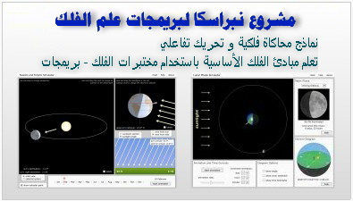
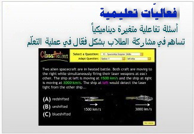

الصفحة الرئيسية
فعّاليات تعليمية
لائحة النماذج
مصادر
الأسئلة
محاكاة
صور
جداول
مخططات تعليمية
نظرة شاملة
أصول التدريس
كيف تستخدم
عروض باوربوينت
مختبرات NAAP
مشروع نبراسكا لبريمجات الفلك
شرح حول المختبرات
المختبرات
نماذج للمجموعة الشمسية
الإحداثيات و الفصول
السماء المتحركة
حركات مختلفة للشمس
محاكي المدارات الكوكبية
محاكي أوجه القمر
منحنيات إشعاع الجسم الأسود & فلاتر UBV
مستويات الطاقة في ذرّة الهيدروجين
مخطط Hertzsprung-Russel
محاكي النجوم الثنائية الخسوفية
الاحتباس الجوي
كواكب خارج المجموعة الشمسية
مطيافية النجوم المتغيرة
المناطق المأهولة
نظرة عامة
للمدرّسين
أنشطة تفاعلية
English Page
اتصل بنا

